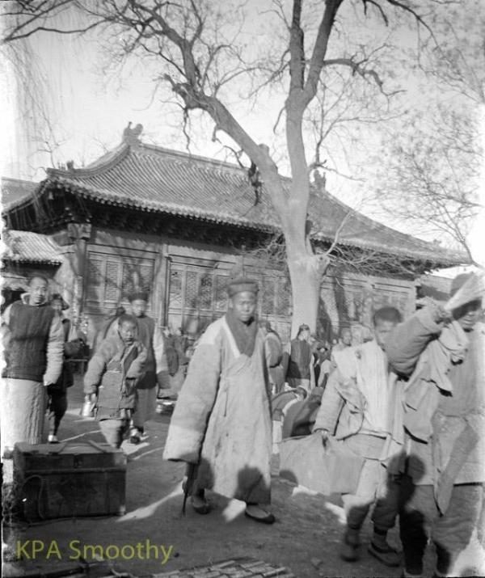
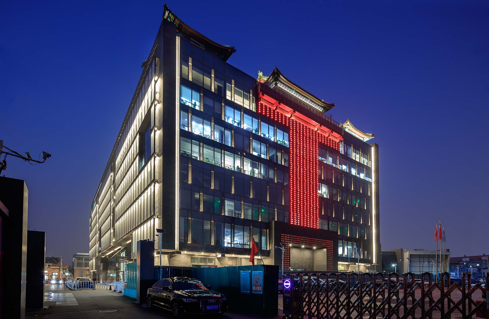

北京 · 东四
寺院、庙市
与今天的街区
隆福寺的名字留下了，空间和用途几经改变。
隆福寺位于东四路口西北、皇城以东。1452年，景泰帝下令在宫城东侧建寺，次年完工。建寺碑文说，当时京城的大寺多在西北，东面尚缺，兴建隆福寺是为了奉佛祈福。后来这座皇家寺院也成了东城重要的交易场所，寺前和院内的买卖，与寺中的佛事长期并存。


寺院里的庙市
清代的隆福寺庙市与护国寺庙市并称“东庙”“西庙”。日用品、书籍、古玩和小吃吸引人们来赶集，店铺和书坊也在附近聚集。1901年火灾烧毁了部分殿宇，买卖仍然继续，灾后的院落照片里，可以同时看到余存的大殿和密集的摊贩。
1952年元旦，东四人民市场开业。南部的市场棚顶与北部尚存的旧殿曾共处一地，后来殿堂被用作库房，山门和其余建筑逐步拆除。1976年地震后，剩余殿宇被拆除，部分藻井构件保存下来，如今在先农坛的北京古代建筑博物馆展出。
从大厦到今天的街区
1988年隆福大厦营业，百货商场成为这一带的主要建筑。1993年大厦失火，改扩建后于1998年重新营业，2004年停业。百货商场停业后，街边店铺和早市仍在经营。
2012年启动的地区更新保留并改造了隆福大厦，调整入口、广场和屋顶空间。屋顶的仿古建筑借用了旧寺的形象，今天可供游览。2019年一期投入运营，2025年二期开业季启动，文化、办公、餐饮等用途进入街区。钱粮胡同、隆福寺街仍能帮助辨认旧寺的大致范围，古今地图可以把旧院落与今天的街巷放在一起看。
看《建筑轮回》中的10张照片 ↗1452—2025
沿革时间表
按寺院、市场、大厦和街区的变化往下看。